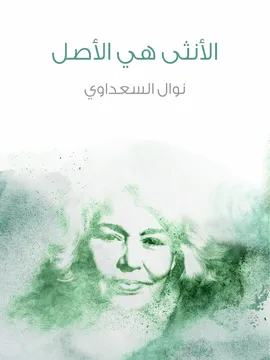

الأنثى هي الأصل

قراءة عربية أصلية محددة النطاق في الصفحات 23 إلى 28 من ملف PDF المرتبط، وليست تلخيصا كاملا للكتاب. نناقش ما تدعمه هذه المقاطع فقط.
سبعة مبادئ لتحرير المرأة
تضع السعداوي في مستهل كتابها سبعة مبادئ أساسية: قضية تحرير المرأة قضية سياسية بالدرجة الأولى لأنها تمس حياة المجتمع كله لا النساء فحسب؛ والهدف إطلاق إمكانياتهن الفكرية جميعها بالعمل المنتج في ظل مساواة كاملة بين الجنسين؛ والقيود على الإنسان رجلًا أو امرأة تعرقل تطوره الطبيعي وتضر بصحته؛ ولا دين يتعارض مع العدالة والمساواة؛ ولن تنال النساء وحدهن الحرية في مجتمع لا يحققها لجميع فئاته المظلومة؛ وشرف الإنسان هو الصدق بلا حياة مزدوجة؛ ولا دليل علمي في البيولوجيا أو التشريح على أن المرأة أقل من الرجل، فالوضع الأدنى فرضه المجتمع لأسباب اقتصادية واجتماعية لصالح الأسرة الأبوية. ثم تبدأ رحلة القراءة في تاريخ البشرية القديم قبل ظهور الأديان، حيث كانت لأنثى الإنسان قيمة إنسانية كبرى.
زاوية وحدود القراءة
قراءة موجزة من ص ٢٣ إلى ص ٢٨ من أصل ١٨٦ صفحة، تعرض مبادئ الكتاب ومطلع الفصل الأول، لا الكتاب كاملًا.
الطبعة والقراءة
هذه النسخة من الكتاب صادرة ومتاحة مجانًا بموجب اتفاق قانوني بين مؤسسة هنداوي والسيدة الدكتورة نوال السعداوي.
تنزيل PDF المجاني ↓ القراءة والمصدر الرسمي ↗